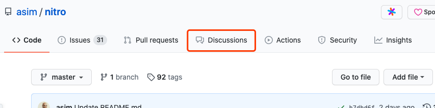
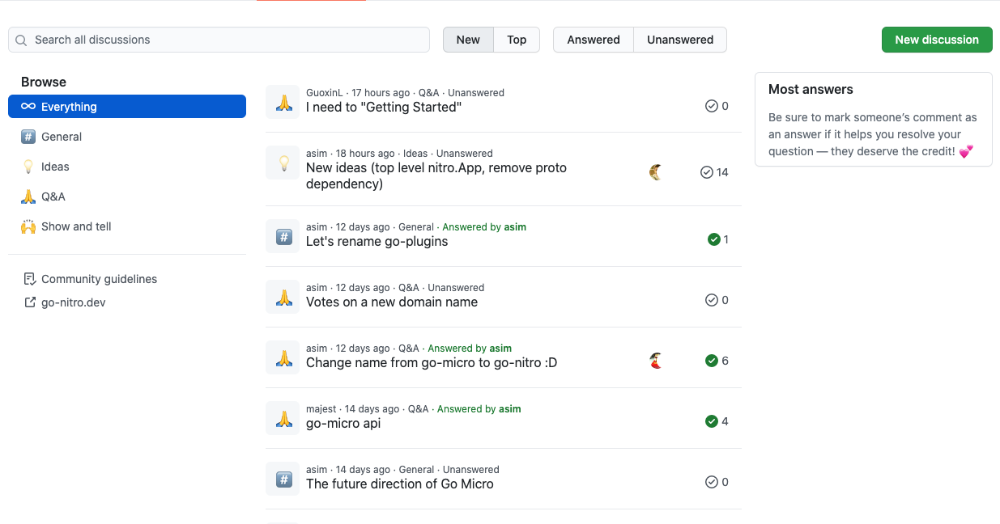
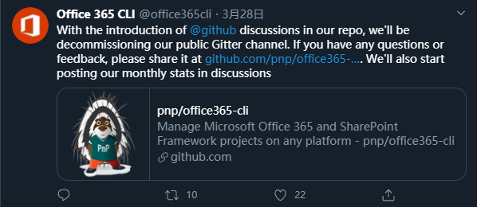

GitHub 出的这个功能，让开源项目有了自己的社区
大家好，我是站长 polarisxu。
为了更有利于开源项目的发展，形成自己的社区很重要，作者们可以更好地和使用者交流互动，了解他们需求、问题。虽然 GitHub 有 issue，但毕竟它主要还是用于反馈 bug、提新特性，不是一个社区的感觉。所以一般项目都会有其他的社区，比如会开通 google groups 邮件组、使用 Gitter、Discord、Slack 等。当然，国内的项目通常会使用 QQ 群、微信群。（我个人认为，QQ 群、微信群对社区沉淀是很不好的，知识输出、讨论没法重用，虽然对提问者友好，可以快速得到回应）
今年年初，GitHub 开始测试一个新功能：Discussions，它想为开源项目打造一个自己的社区，将之前分散的社区聚合在一起。比如一般开源社区是这样的：用 Gitter 作为开源社区聊天的地方，StackOverflow 用于寻求问题的答案，而论坛用于讨论等。有了 Discussions，我们可以在上面开展很多活动。GitHub 官方对 Discussions 的描述是这样的：
This is a community we build together. Please be welcoming and open minded.
不过目前该功能还在公测中，具体正式发布时间还未知。如果你想自己的项目试用该功能，可以到 https://github.com/github/feedback/discussions 提出申请，请求 GitHub 将你的项目加入 Beta 列表中。这里有别人请求加入的交流：https://github.com/github/feedback/discussions/24。
01 一睹 Discussions
我们通过一个开通了该功能的 Go 项目：Nitro （之前的 go-micro，具体详见该文 ）来看看 Discussions。
在启用了 Discussions 的项目上，在顶部会有这个 Tab：

这个功能应该可以通过 Settings 控制是否启用（在有该功能测试资格的情况下）。
进入该 Tab，页面如下：

左侧可以有分类，中间是主题列表，右侧可以有其他一些提示信息。顶部还可以通过 New、Top、Answered、Unanswered 快速筛选，当然也支持搜索。
02 Discussions V.S Issues
以前，Issues 也常常被用来讨论一些与当前 GitHub 项目相关的问题，但实际上可能 Issues 不太适合作为一个问答的地方，更多应该是反馈 bug 等？！现在有了 Discussions，可以对二者的定位做一个划分：Issues 用来反馈 bug，提出新特性；Discussions 用来讨论其他与项目相关的，当然，它也可以用来讨论新特性。在新特性这一点上，我个人认为 Discussions 适合于新特性不成熟的讨论阶段，基本确认后，通过 issue 提交该新特性，实现后 PR 关闭该 issue。
03 你看好该功能吗？
从该功能看，GitHub 希望为开源项目提供全套的服务？将相关信息聚合在一起，更有利于形成开源项目自己的社区，我个人挺看好它的。你觉得该功能怎么样？
在 2020 年 3 月 28 日，Offer 365 CLI 就在 Twitter 上宣布，他们将关闭公共 Gitter 频道，开始使用 GitHub Discussions 发布相关信息。

现在看看它的 Discussions 页面，维护的还不错：https://github.com/pnp/cli-microsoft365/discussions。